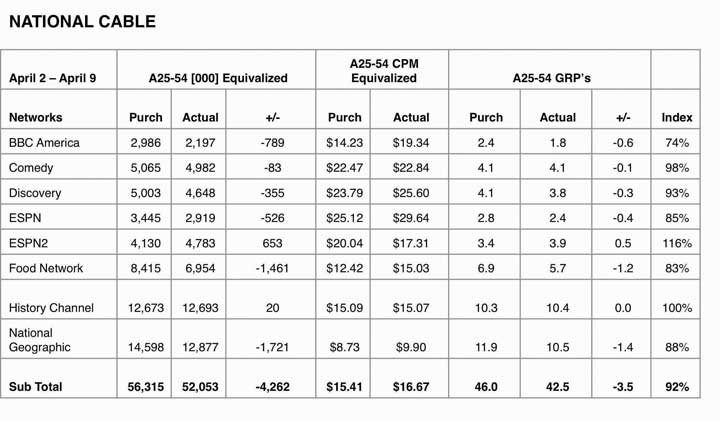
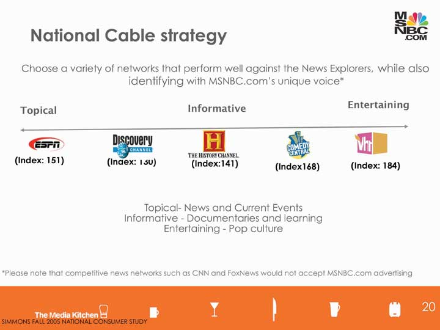
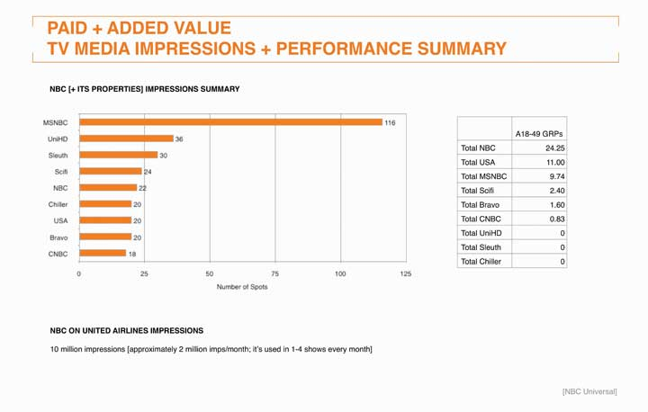
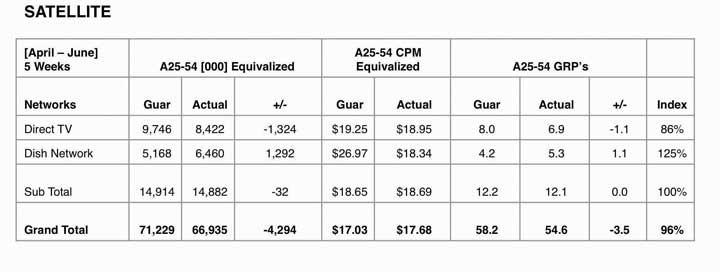
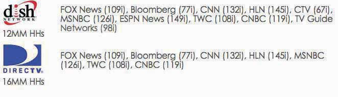
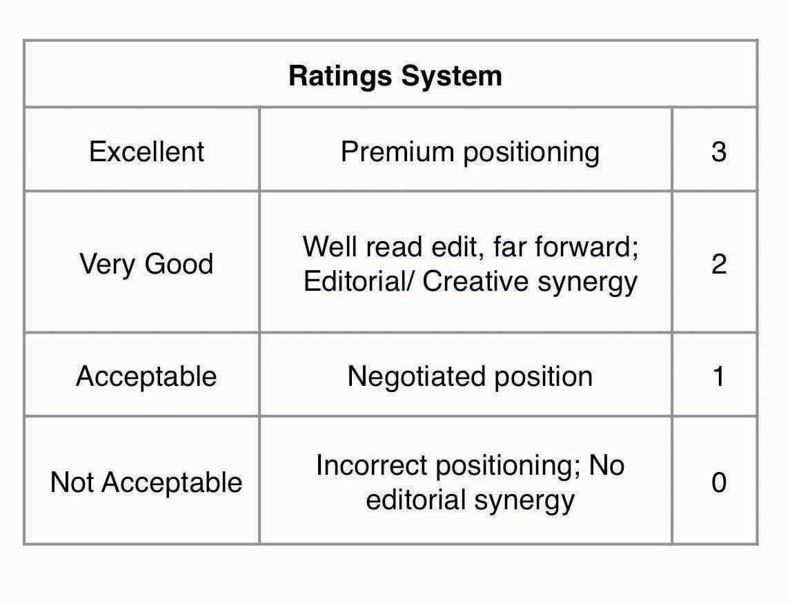

After studying this section, students should be able to do the following:
Traditional (broadcast) media struggle to demonstrate a direct impact on the bottom line. These advertising messages reach many consumers at the same time, and these receivers also get bombarded by a multitude of competing ads and other stimuli that vie for their attention. It’s not easy to connect the dots between a single commercial (or even an entire ad campaign) and the purchases of thousands of people who may or may not have noticed the message in the first place.
As we’ve seen, it’s fairly easy for media planners to compute a metric that lets them compare the relative cost-effectiveness of different media and of spots run on different vehicles in the same medium. This metric is cost per thousand (CPM)Metric that reflects the cost to deliver a message to one thousand people.; it reflects the cost to deliver a message to one thousand people. Because it provides an apples-to-apples perspective, it’s very helpful to have this information in hand.
Unfortunately, CPM alone is not a great indicator of ROI: it tells us how good we are at getting our message to an audience but nothing about the impact that message has when it reaches the target. Let’s briefly review some of the other ways advertisers try to provide evidence that the messages they create actually generate value for the client and its stockholders.
For some time now network television has been in a defensive posture as the industry struggles to justify its existence. Some skeptics predict the demise of this medium as an advertising platform because our society is too fragmented for it to be effective. Note: this criticism certainly doesn’t apply to direct-response TV (DRTV)TV advertising in which sales are directly linked to on-air programming, as in shopping channels or “call now” ads., where sales are directly linked to on-air programming or “call now” ads. When a shopping channel like QVC puts that unique cubic zirconium ring on the air, the network knows within minutes whether it’s a winner.
While an advertiser in the 1960s could be confident that he could reach a hefty proportion of the American public with a commercial on one of the three networks in existence at the time, today the (TV) picture is much different. Consumers can choose from hundreds of channels—when they’re not surfing the Web or listening to podcasts and MP3 files. Young people in particular are migrating away from TV and spending more time online—especially as programming that used to appear exclusively on TV becomes available as streaming video. To rub salt into the wound, viewers today can exercise control over what they see as they gleefully TiVo or DVR their way into commercial-free entertainment on their big flat-screen TVs.
For now, estimates vary widely—one study found that the average ROI of TV advertising is 0.54 to 1 for packaged goods and 0.87 to 1 for nonpackaged goods. According to this research, these media on average actually lose money for the advertiser!Bill Harvey, “ARF Engagement Recipe: Surprise, Utility and Emotion,” Next Century Media, http://www.nextcenturymedia.com/2006/03/arf-engagement-recipe- surprise-utility.htm, March 3, 2006 (accessed August 16, 2008). Another estimate, by well-known media analyst Kevin Clancy, is a bit more sunny: he states that the average ROI of TV advertising campaigns ranges from 1 to 4 percent—still a small number, but at least it’s in the positive column.“How to Improve Marketing ROI: Free Kevin Clancy Web Seminar Offers Five Ways to Improve Marketing Performance,” The Copernicus MZine, November 2003, http://www.copernicusmarketing.com/about/mzine/monthlyeds/nov03.shtml (accessed August 16, 2008); http://www.copernicusmarketing.com/about/mzine/monthlyeds/nov03.shtml (accessed August 16, 2008).
Traditionally the metric this industry uses is viewership ratingsData indicating how many people watch certain TV shows; particularly data Nielsen compiles., particularly those Nielsen compiles. Again, these data have questionable relevance to ROI because they only show whether people watch the shows and not necessarily whether they use the commercial breaks to hit the bathroom or make a sandwich. And these ratings often get collected in a finite period of time—sweeps weekTime period during which viewership ratings are collected; networks often pump up their schedules to attract viewers during this time.—so networks pump up their schedules to attract as many viewers as they can during this window. There is widespread consensus among advertisers that the TV industry will need new audience metrics—other than reach and frequency information it uses to calculate CPM—to report commercial ratings.
To get a sense of the pessimism surrounding this industry, consider some results from a recent study by the Association of National Advertisers (ANA) and Forrester Research:
With all that negativity, is network television dead? Don’t write its obituary yet. Although it’s undeniable that our world is a lot more fragmented than it used to be, there still are large-scale events that unite us and continue to command a huge mass television audience. These include the Super Bowl, the Olympics (with an estimated four billion viewers) and, of course, American Idol.
Advertisers also are getting more creative as they search for ways to draw in audiences—and entice them to stay for the commercials. For example, some are experimenting with bitcomsA set of ads inserted within a TV show, often introduced by a stand-up comedian (perhaps an actor in the show itself) performing a small set that leads into the actual ads. that try to boost viewers’ retention of a set of ads inserted within a TV show (we call this a commercial pod). In a typical bitcom, when the pod starts a stand-up comedian (perhaps an actor in the show itself) performs a small set that leads into the actual ads.David Goetzl, “Turner: We’ll Get Your Brand into Our Programming,” Marketing Daily, http://www.mediapost.com (accessed March 14, 2007).
Finally, the networks are taking baby steps toward getting more credit for viewership that occurs in places other than people’s living rooms. Our mobile society exposes us to television programming in bars, stores, hospital waiting areas, and dorm rooms—current ratings systems don’t reflect this. In early 2008 Nielsen fielded a new service it calls The Nielsen Out-of-Home Report; this is a cell-phone based service that provides metrics for television viewing that occurs outside of the home in bars, hotels, airports, and other locations. CNN has already started to use this service. In addition, the Nielsen Online VideoCensus will measure the amount of television and other video programming people view over the Internet.Anthony Crupi, “CNN Orders Out-of-Home Study on TV Viewership,” Mediaweek, August 11, 2008 (accessed August 16, 2008).
Figure 14.4
National cable metrics from the msnbc.com campaign show the planned CPM versus the actual CPM. ESPN2 and History Channel met or exceeded purchased impressions.
Figure 14.5
The channels SS+K chose for the msnbc.com campaign covered the range and interest of the msnbc.com News Explorer.
There was a unique advantage for msnbc.com; as part of the NBC and Microsoft families it could tap into these resources. The client was able to request in-kind mediaPlacement at no media cost on the properties an advertiser owns, such as msnbc.com ad placement on NBC TV stations and Microsoft Web sites., which is placement on their properties at no media cost. The TV spots ran during launch week of the campaign.
Figure 14.6 In-Kind Media Results from TV
United Airlines ran the thirty-second msnbc.com spot on its in-flight television programs.
Figure 14.7
Satellite purchase was a strategic way for msnbc.com messaging to air on competitors’ networks. Dish Network exceeded purchased impressions.
Figure 14.8
msnbc.com purchased a “news cluster” on the satellite networks, which allowed its brand messaging to appear on competitor channels. With cable, those networks would have likely declined to accept competitors’ advertising.
Cable television has prospered at networks’ expense because it is much more targeted—and a lot cheaper. Travel, cooking, science, history, weight loss: it’s all available to a well-defined audience that’s self-selected to be interested in ads that relate to these categories. Still, like its older brother, network TV, cable lacks precise metrics. In some cases an advertiser will take advantage of cable’s targeting capabilities to conduct an A-B testMetric obtained by showing one execution of a commercial to a select group of viewers in one part of a city and a different version to another group elsewhere, then examining the product’s sales in each area. of a commercial. This means that it will show one execution to a select group of viewers who live in one part of a city and a different version to another group—and then examine the product’s sales in each region to identify any results. But this is still an indirect metric and is not routinely used.
MTV Networks—one of the biggest cable success stories—is trying to remedy that problem now. The network has contracted with a firm called Marketing Evolution to develop a system for its advertisers based on meeting benchmarks including awareness, relevancy, new purchase intent, purchase loyalty, and advocacy. Advertisers may still pay on a CPM basis, but also have the option to contract with Marketing Evolution to measure the success of their buys.Steve Miller, “MTV Networks Puts New Advertising ROI Metrics into Rotation,” Brandweek, June 29, 2008, http://www.brandweek.com/bw/content_display/news-and-features/direct/e3i3a6a726c3dd89a140cfb16d45053c8ec (accessed August 15, 2008). Time will tell if this new project will rock the metrics world.
Radio stations design their programming to attract certain listeners and then sell those listeners to advertisers in tiny increments. As with TV, advertisers look carefully at listener ratings to determine who and how many listeners their ad will reach on a given station—the leading industry ratings are provided by Arbitron. The company used to collect these data by asking listeners to keep a diary of the stations they listen to, but now it uses a Portable People Meter to automate the process and deliver more reliable results.http://www.arbitron.com/downloads/arbitron2008mediaplan.pdf (accessed August 16, 2008).
A radio station has an ad time inventory of about eighteen minutes per hour, which it sells in increments of fifteen seconds, thirty seconds, and sixty seconds (:15s, :30s, and :60s). But not all minutes are valued equally. Audience size shifts dramatically throughout the day, and radio rates vary to reflect the change in the estimated number of listeners your ad will reach.
The radio industry divides up the time it sells in terms of day-partsGroups of hours into which the radio industry divides up the time it sells, such as A.M. drive time, P.M. drive time, and late night.:
The Starch test, as you learned in Chapter 11 "Execute on All Platforms: SS+K Goes into Production Overdrive", is a widely used metric that measures the performance of print advertising. Starch Research conducts quantitative research with magazine readers to identify what type of impact an ad had on them.http://www.starchresearch.com/services.html (accessed August 16, 2008). The service calculates these scores:
Another metric that can be useful is pass-along readershipMagazine ad readers in addition to the original purchaser.. A magazine that readers share with others most likely displays a higher level of engagement, so it’s probably a good environment in which to place a relevant message. Research shows that readers have positive feelings about pass-along copies. Those who receive a magazine from others exhibit the same levels of recall and brand association for the issue’s ads as those who initially received the copy (plus, they get a “freebie,” so perhaps that puts them in a good mood).“Reader Dynamics and Ad Impact on Readers of Pass-Along Copies,” magazine.org, 2006, http://www.magazine.org/content/Files/valReadershipPassAlong.pdf (accessed August 15, 2008).
Figure 14.10
The Media Kitchen used this ratings system to measure placement levels for the print campaign.
Figure 14.11
This is a summary of the ratings and positioning.
What makes a print ad effective? One recent study reported that we are far more likely to remember spectacular magazine ads, including multipage spreads, three-dimensional pop-ups, scented ads, and ads with audio components. For example, a Pepsi Jazz two-page spread with a three-dimensional pop-up of the opened bottle and a small audio chip that played jazz music from the bottle’s opening as well as a scratch-and-sniff tab that let readers smell its black cherry vanilla flavor scored an amazing 100 percent in reader recall.Erik Sass, “Study Finds Spectacular Print Ads Get Spectacular Recall,” http://www.mediapost.com (accessed February 23, 2007).
Unfortunately, that kind of multimedia treatment is very expensive; not every ad can mimic a Broadway production! Still, there are basic principles that increase a print ad’s likely impact on the reader:
Traditional broadcast media platforms are under great pressure to demonstrate that they contribute to a client’s bottom line. Unfortunately, there’s no consensus regarding the single best way to do this—especially because these messages often intend to shape opinions or slowly evolve or reinforce a brand’s image over time rather than motivating an immediate purchase. For now, most metrics estimate the number and characteristics of consumers who get exposed to the message, while in some cases focus group or survey data based upon a sample of these people can suggest that these messages are likely to result in the desired action. Media companies in the television, radio, magazine, and newspaper industries continue to work on innovations that will allow them to show more direct results to advertisers who need to decide where to place their dollars.